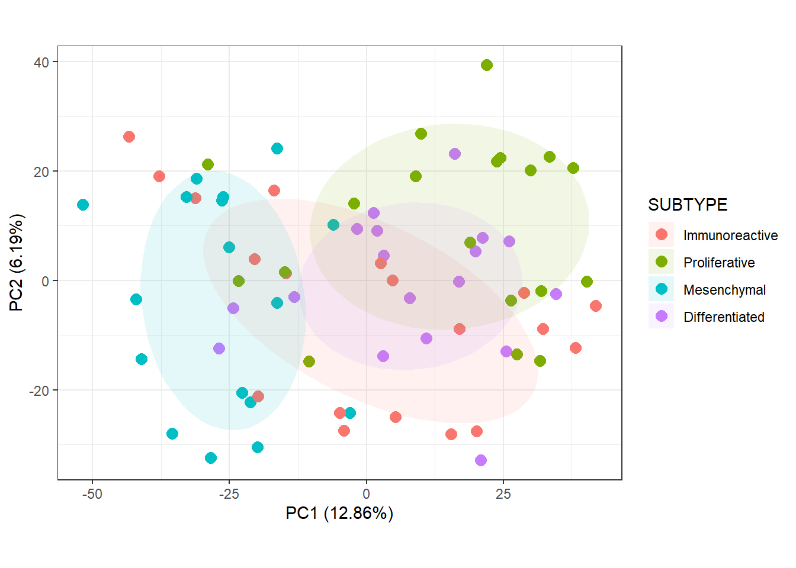

3.3 PCA
3.3.1 Overview
This is the overview for PCA.
3.3.2 PCA Plots
# Default plot
plot_pca_v3(oca.set, phenotype = "SUBTYPE")
# New legend title
legend.title <- "Subtype"
plot_pca_v3(oca.set, phenotype = "SUBTYPE") +
# Change the titles of the point color and ellipse fill legends
guides(color = guide_legend(title = legend.title),
# Do not include this line if show.ellipse = FALSE
fill = guide_legend(title = legend.title)) +
# Change base text size. theme_set() does not work here
theme_bw(base_size = 14)
Figure 3.1: This is the figure caption
I am referencing Figure 3.1.
3.3.3 List Top-Contributing Features
In MSnSet.utils, there is a function that allows us to determine which features contribute the most to each principal component. This is the main part of the code to do this.
# V is the matrix of eigenvectors that have been scaled to unit vectors.
cutoff <- sqrt(1 / nrow(V))
res <- apply(V, 2, function(w) {
# Subset to values at least equal to the cutoff in magnitude
x <- w[which(abs(w) >= cutoff)]
# Order this subset by magnitude
x[order(abs(x), decreasing = TRUE)]
})